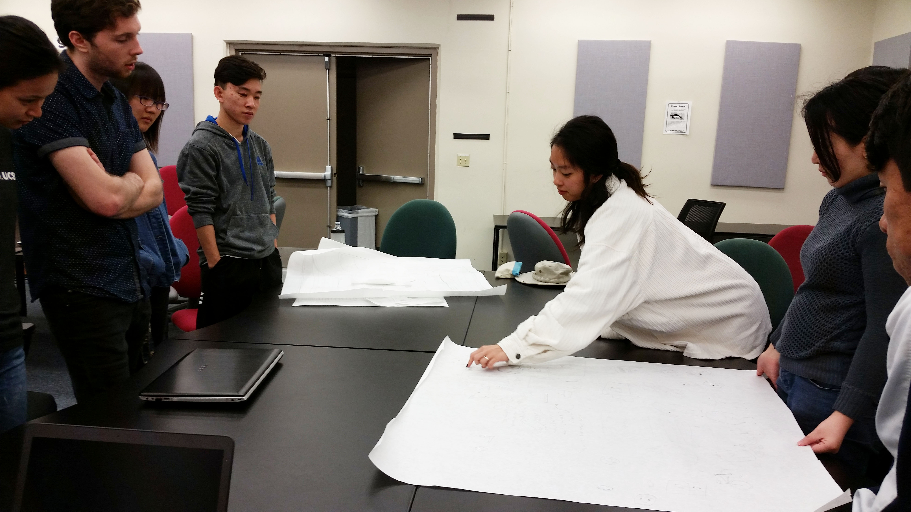
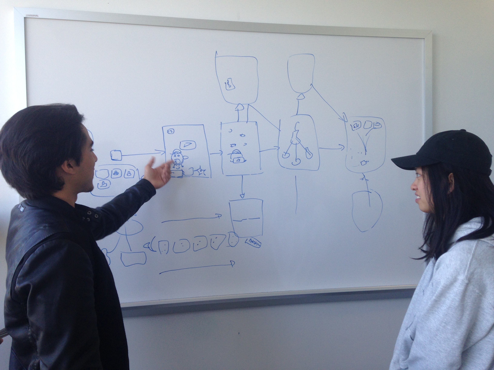
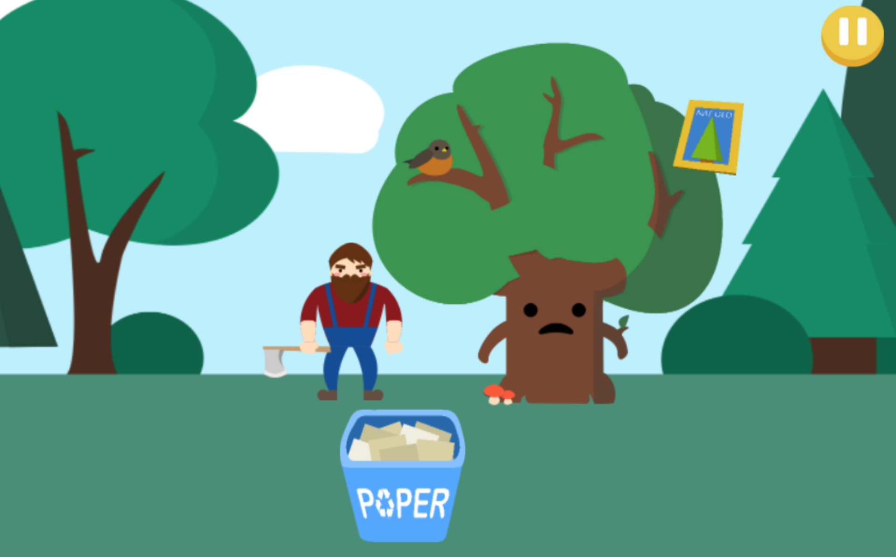
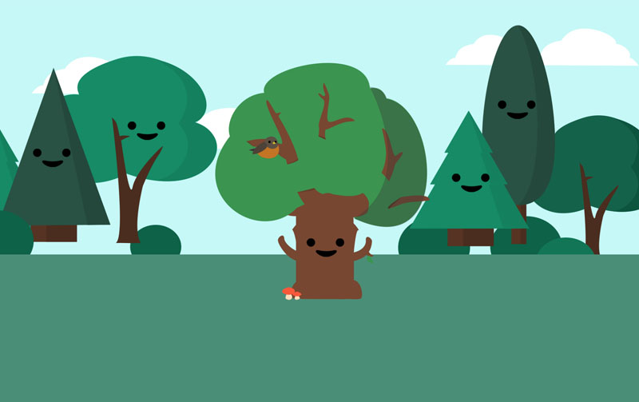
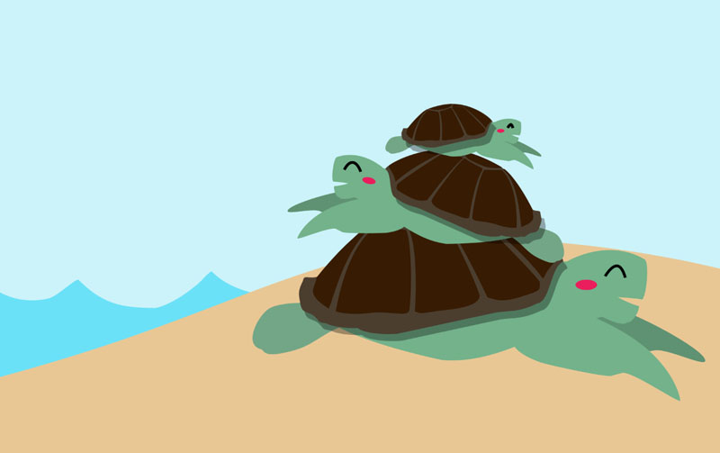
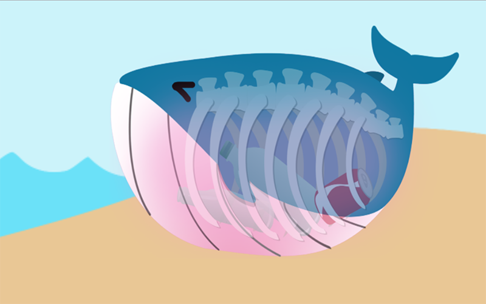
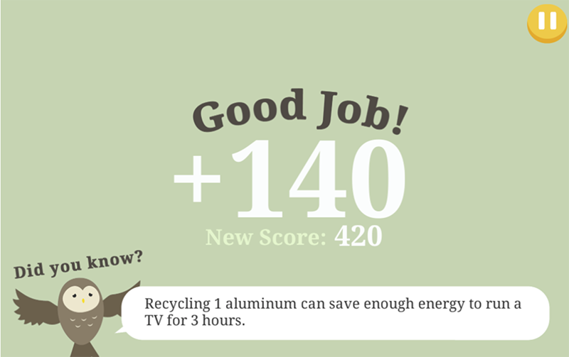
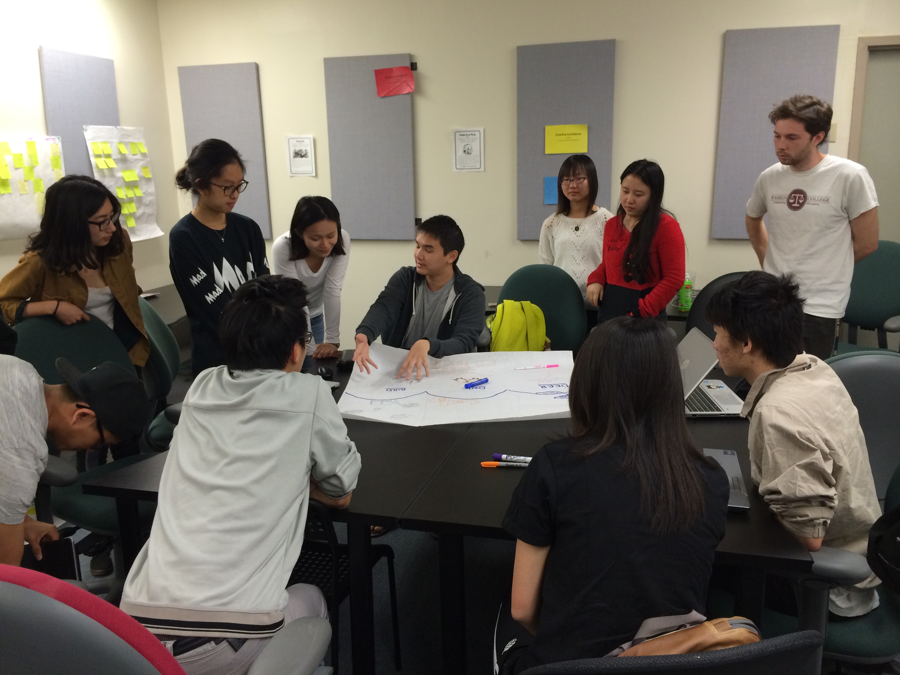
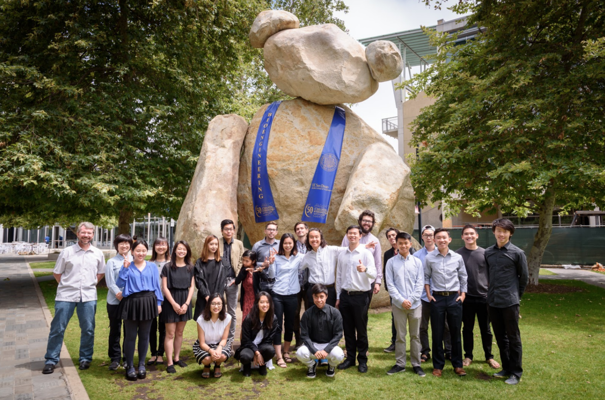

« Back to Projects Next Project »
Cool Ways to Recycle
Independent Group Project
TOOLS Photoshop, Illustrator, Unity
TEAM Danielle Tobey, Sharmaine Manalo and many, many more (shown on recy.cool).
ROLE Project manager, game designer, and artist.
OVERVIEW
Cool Ways to Recycle is a web game designed and developed by 20+ UCSD students who care about educating elementary kids on how to recycle and stay environmentally conscious. The game includes 5 mini games, progress quizzes, and a main menu with 6 levels represented by animals to save by cumulating a high score. This project was originally a quarter-long project, but we worked through the summer and are still debugging and finalizing our game for distribution.
RESEARCH and BRAINSTORMING
We started our quarter by going to a nearby elementary school to interview students on what they know about recycling and what games they already enjoy. With that insight, we began brainstorming ideas for games, and voted to settle on a fast pace game comprised of multiple minigames that targetted different aspects of recycling.
Brainstorming game ideas
Prototyping
DEVELOPING and ITERATING
As a project manager, I managed a team of 3 developers and 3 artists to design and develop the "catch the trash" minigame and "save the ocean" minigame. I also drew and animated the dolphin character on our main menu and animated the win and lose consequence screens for both games.
Here are some screenshots of the game
    Debugging with developers
ACCOMPLISHMENTS
Our project was showcased during Design Forward at SD Startup Week 2016 and on the UCSD Jacobs School of Engineering Newsletter.
SOLUTION
Our game is still being finalized. Please contact me at mhsia.ucsd.edu to play our current build, or view our journey at http://www.recy.cool.
THE TEAM
I am middle one who is squatting.
« Back to Projects Next Project »